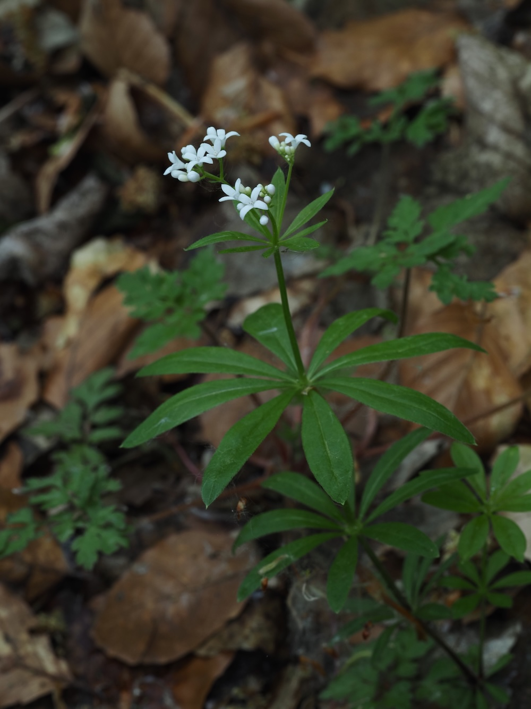

Der Duft kommt erst beim Welken
Frisch gepflückt riecht der Waldmeister kaum nach etwas. Erst beim Welken oder leichten Antrocknen entwickelt er seinen charakteristischen süßen Heuduft — verursacht durch Cumarin, das beim Welkungsprozess entsteht. Daher der traditionelle Trick: Maibowle wird mit angetrocknetem Waldmeister angesetzt, nicht mit frischem. Der Aroma-Höhepunkt liegt etwa 24–48 Stunden nach dem Pflücken.
Vorsicht mit der Dosis
Cumarin ist in größeren Mengen leberschädlich. Deshalb empfiehlt die deutsche Lebensmittelbehörde nur 3 Gramm Waldmeister pro Liter Bowle — eine kleine Dosis. Industrielle Waldmeister-Aromen sind heute synthetisch (cumarin-frei), weil das echte Cumarin in zu hohen Konzentrationen problematisch ist. Trotzdem: einmal im Jahr, eine kleine Maibowle, ist absolut unbedenklich.